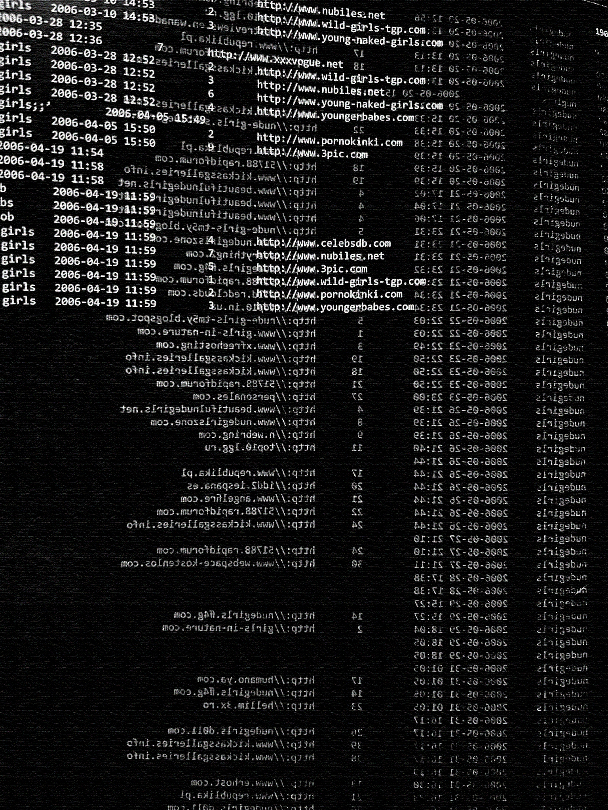
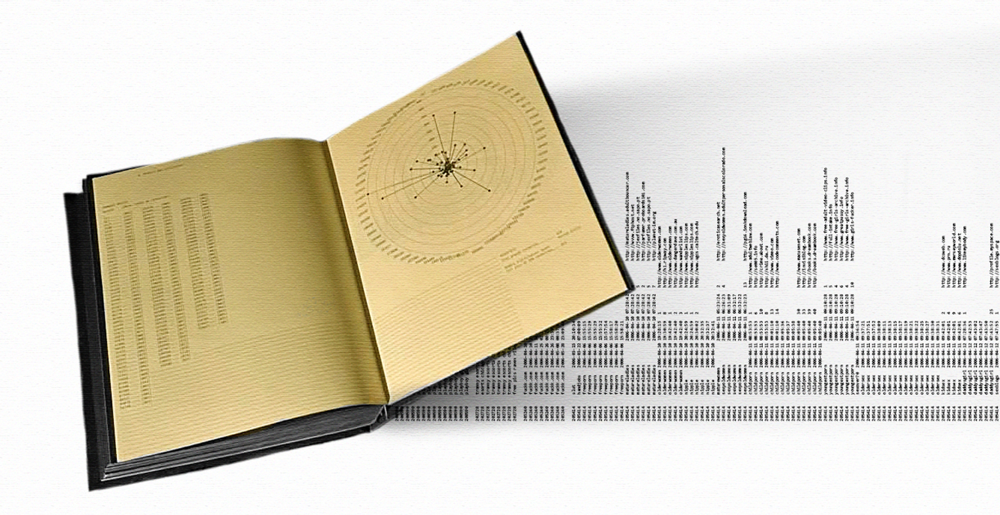
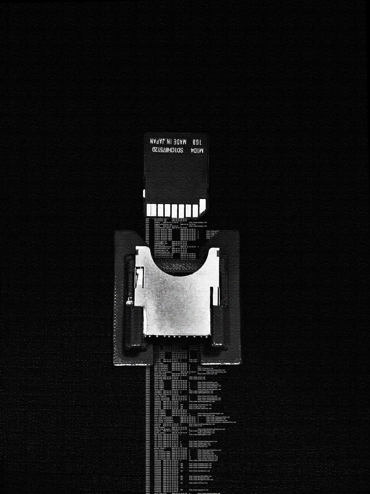
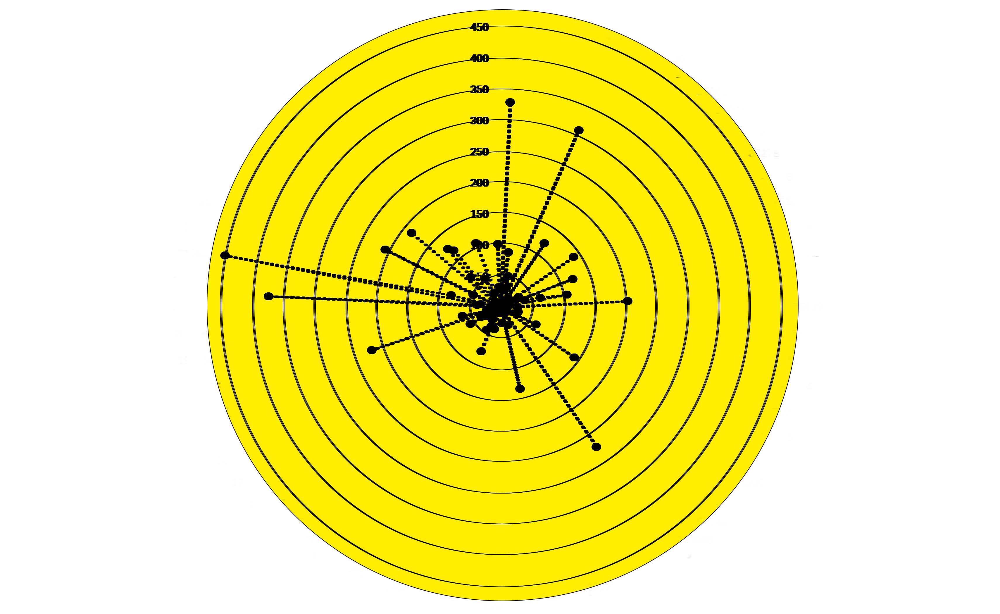

AnonID
.2026
AnonID: Un numéro d'identification anonyme pour utilisateur. En 2006, AOL, une compagnie qui permettait à ses utilisateurs de faire des recherches sur Internet, publie "accidentellement" tous les historiques de recherche de ses utilisateurs (environ 250 000 utilisateurs, 20M de recherches). Cette publication regroupe toutes les recherches pornographiques de 134 utilisateurs réels de cette banque de données, 434 pages, 5 657 recherches pornographiques et plusieurs analyses non-exhaustives du contenu. La banque de données originale est accessible via une carte SD fixée sur la publication. Édition, production, codage.





Site Web